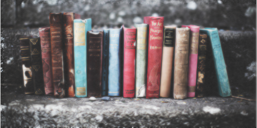
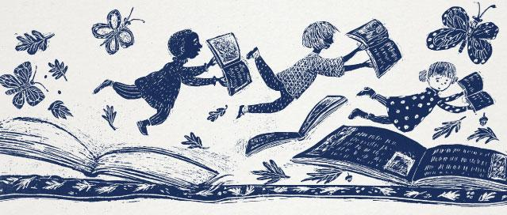
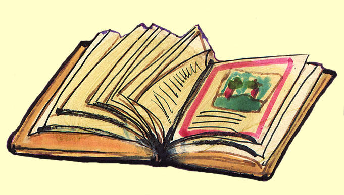

Mundo literario
Bienvenidos
¿Qué es la literatura
La literatura es una de las Bellas Artes y una de las más antiguas formas de expresión artística
Caracteristicas
se caracteriza:
el uso del lenguaje verbal con fines estéticos, ecude a herramientas retóricas, ect.
.
Importancia
La literatura es una de las grandes formas de expresión artística de todos los tiempos
Historia
La palabra literatura proviene del latín littera, término para “letra”, común en vocablos como litterator
la primera tradición formal fue la épica, que cumplía con roles fundacionales
y contenía no sólo gestas militares, sino también las visiones cosmológicas y
religiosas de sus pueblos.
la tradición literaria occidental tiene su inicio formal en la Grecia Clásica,
con la trascripción de los textos épicos atribuidos a Homero (c. siglo VIII a. C.).
La literatura griega fue luego heredada por los romanos, quienes perpetuaron su tradición
estética en más de un sentido. Así, la literatura cristiana medieval se centró en la
experiencia divina, la hagiografía (vida de los santos) y la poesía mística, así como la
lectura de la Biblia y de otros textos sacros.
Tipos de literatura
La literatura no posee una clasificación universal o estándar, dado que se la suele clasificar más bien conforme a su época de producción, o a las técnicas o recursos empleados, conformando así distintas “escuelas” literarias que, a grandes rasgos, podemos resumir en:

Literaturas antiguas. Literaturas clásicas.
Literatura moderna. Literatura vanguardista.
Literatura mística. Literatura romántica
Literatura realista. Literatura oral.
Géneros literarios
son un horizonte de expectativas de lectura, es decir, una clasificación previa de los tipos de obras literarias que se componen y se consumen, que nos dice de siquiera abrir un libro qué tipo de contenido hallaremos.
Poesía.
Narrativa: Cuento, Novela, Crónica
Dramaturgia.
Ensayo.

Corrientes literarias
Las corrientes literarias son el conjunto de obras literarias que se han categorizado como representativas de un periodo histórico o momento en específico, ya que comparten una serie de características comunes como la temática, la ideología o el estilo, entre otros.

Teoría literaria
La literatura es el objeto de estudio de la teoría literaria, una ciencia que analiza el discurso literario. Los primeros tratados de esta teoría los realizó Aristóteles, uno de los filósofos griegos más destacados, en sus textos Poética y Retórica.
Dr. Calle claveles #63, colonia Santa Rosa
CP. 62821
Correo: Literatura@gmail.com
Telefonos: 7351762891 Y 7779825615